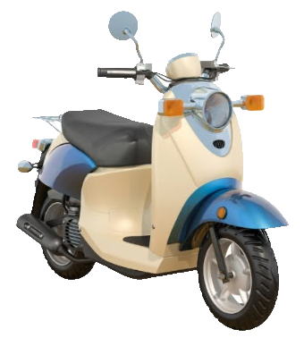

Mesin lebih awet
Oli dan filter yang diganti tepat waktu mengurangi gesekan dan menjaga performa mesin.
Jadwalkan servis, pantau biaya, dan jaga motor tetap prima untuk perjalanan harian.
Coba Sekarang
Rawatin membantu pemilik motor merawat kendaraannya tanpa repot. Kami mengingatkan jadwal servis, mencatat biaya perawatan, dan memberi tips agar motor tetap nyaman dan aman dipakai setiap hari.
Oli dan filter yang diganti tepat waktu mengurangi gesekan dan menjaga performa mesin.
Perawatan kecil yang rutin mencegah kerusakan besar yang ongkos perbaikannya jauh lebih mahal.
Rem, ban, dan rantai yang diperiksa berkala membuat motor stabil dan responsif di jalan.
Ganti oli mesin setiap 2.000–3.000 km atau sesuai buku panduan. Oli yang sudah kotor membuat mesin cepat panas dan aus.
Periksa ketebalan kampas rem dan tekanan angin ban setiap minggu. Ban yang kempis boros bensin dan licin saat hujan.
Bersihkan dan lumasi rantai secara berkala, lalu cek air aki atau tegangannya agar motor tidak mogok saat dinyalakan.
Simpan tanggal dan biaya tiap servis. Dengan catatan yang rapi, kamu tahu kapan servis berikutnya dan ke mana uang perawatan pergi.
Rawatin adalah layanan yang membantu kamu menjadwalkan servis, memantau biaya, dan merawat motor secara rutin.
Umumnya setiap 2.000–3.000 km atau 2–3 bulan sekali. Cek buku panduan motor untuk jadwal yang paling tepat.
Setiap servis dicatat beserta tanggal dan nominalnya, sehingga total pengeluaran perawatan mudah dilihat.
Tekan tombol Coba Sekarang, lalu ikuti langkah pada bagian Cara Penggunaan.